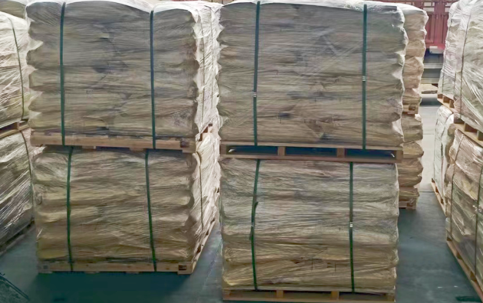

Procurement guide
STPP vs SHMP: How Industrial Buyers Should Compare the Two Phosphates
Compare STPP and SHMP by chemical identity, function, grade, specification, physical form and supplier-qualification requirements.
Read buyer guide